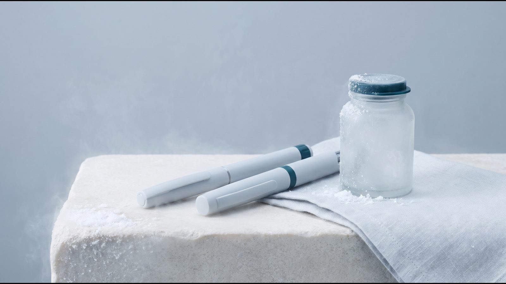
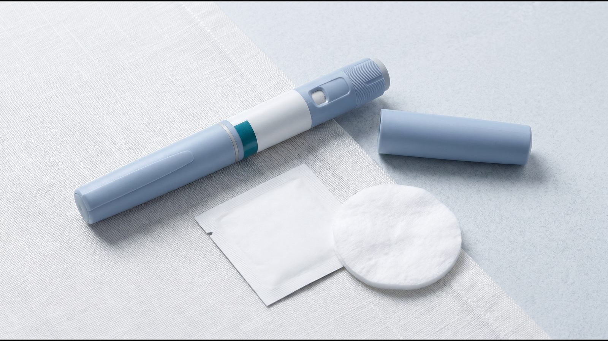

Тирзепатид (Mounjaro®): що це і як діє подвійний агоніст GIP і GLP-1

Що таке тирзепатид: коротка відповідь
Тирзепатид — діюча речовина препарату Mounjaro® (Мунджаро), агоніст тривалої дії, який вмикає рецептори двох власних гормонів людини: GIP і GLP-1. Тому його називають подвійним агоністом, на відміну від семаглутиду, що діє лише на рецептори GLP-1. За європейською інструкцією (EMA), Mounjaro® показаний при цукровому діабеті 2 типу і для контролю маси тіла в дорослих з ожирінням або надмірною вагою та супутньою хворобою. Препарат вводять під шкіру раз на тиждень.
Місце тирзепатиду серед ін'єкційних препаратів цього класу описує огляд ін'єкцій GLP-1.
Як діє тирзепатид
Два рецептори: GIP і GLP-1
GIP (глюкозозалежний інсулінотропний поліпептид) і GLP-1 (глюкагоноподібний пептид-1) є власними гормонами людини. За європейською інструкцією, тирзепатид високоселективно зв'язується з рецепторами обох. На рецептор GIP він діє приблизно так само, як власний GIP, а на рецептор GLP-1 слабше, ніж власний GLP-1.
В американській інструкції тирзепатиду (Zepbound®, FDA) сказано, що GLP-1 є фізіологічним регулятором апетиту і споживання калорій. За доклінічними даними з того самого документа, додавання GIP може додатково впливати на регуляцію споживання їжі.
Апетит і харчова поведінка
Рецептори GIP і GLP-1 є в ділянках мозку, які регулюють апетит; у дослідженнях на тваринах тирзепатид проникав у ці ділянки й активував нейрони. За клінічними даними, які наводить EMA, тирзепатид посилює відчуття ситості, послаблює голод і зменшує кількість спожитої енергії. Він також знижує інтенсивність тяги до їжі і потяг до солодкого та жирного. Маса тіла зменшується здебільшого через втрату жирової тканини.
Цукор крові і шлунок
Тирзепатид посилює виділення інсуліну глюкозозалежно, тобто коли рівень цукру підвищений, і покращує чутливість до інсуліну. Рівень глюкагону натще і після їди він теж знижує залежно від глюкози. Крім того, тирзепатид уповільнює випорожнення шлунка: найсильніше після першої дози, з часом цей ефект слабшає.
Офіційні показання за інструкцією EMA
Mounjaro® схвалений у Європейському Союзі з 15 вересня 2022 року і відпускається там за рецептом. Розділ 4.1 європейської інструкції (SmPC) містить два показання:
- цукровий діабет 2 типу, недостатньо контрольований, у дорослих, підлітків і дітей від 10 років як доповнення до дієти і фізичних навантажень: як монотерапія, коли метформін недоцільний через непереносимість чи протипоказання, або разом з іншими ліками від діабету;
- контроль маси тіла, зокрема зниження і утримання ваги, у дорослих з початковим індексом маси тіла (ІМТ) від 30 кг/м² (ожиріння) або від 27 до 30 кг/м² (надмірна вага) за наявності щонайменше однієї хвороби, пов'язаної з вагою, наприклад гіпертензії, дисліпідемії, обструктивного апное сну, серцево-судинної хвороби, предіабету чи діабету 2 типу; тирзепатид тут доповнює харчування зі зниженою калорійністю і більшу фізичну активність.
Для контролю ваги в дітей і підлітків до 18 років безпеку й ефективність тирзепатиду не встановлено.
[РЕШЕНИЕ ВЛАДЕЛЬЦА: питання №1]
У дослідженні SURMOUNT-1 (NEJM, 2022) 2 539 дорослих з ожирінням або з надмірною вагою та щонайменше одним ускладненням, пов'язаним з вагою, без діабету за 72 тижні знизили масу тіла в середньому на 15,0 %, 19,5 % і 20,9 % на дозах 5, 10 і 15 мг проти 3,1 % на плацебо. Європейська інструкція наводить для того ж дослідження трохи більші числа, бо рахує їх іншим статистичним методом. Решта досліджень SURMOUNT і їхні обмеження описані у статті про результати Mounjaro®.
Протипоказання і застереження
Єдине протипоказання в європейській інструкції: підвищена чутливість до тирзепатиду або до допоміжних речовин препарату. Американська інструкція Zepbound® додає ще одне: медулярний рак щитоподібної залози в особистому чи сімейному анамнезі або синдром множинної ендокринної неоплазії 2 типу (MEN 2). Підстава для цього: у щурів тирзепатид спричиняв пухлини C-клітин щитоподібної залози, а чи має це значення для людей, невідомо. У ЄС ці дані наведені лише в доклінічному розділі, у США вони винесені в попередження в рамці.
Розділи 4.4 і 4.6 європейської інструкції описують ситуації, коли потрібна обережність:
- панкреатит: у людей з панкреатитом в анамнезі тирзепатид не вивчали і застосовують з обережністю; при підозрі на панкреатит препарат відміняють, а після підтвердження не відновлюють;
- поєднання з інсуліном або сульфонілсечовиною: вищий ризик гіпоглікемії, тому дозу цих ліків можуть зменшити;
- нудота, блювання і діарея: можуть призвести до зневоднення і погіршення функції нирок, аж до гострої ниркової недостатності, особливо в людей похилого віку;
- тяжкі хвороби травного тракту, зокрема тяжкий гастропарез (дуже повільне випорожнення шлунка): тирзепатид у таких людей не вивчали, потрібна обережність;
- діабетична ретинопатія: швидке покращення рівня глюкози може тимчасово її посилити, тому потрібне ретельне спостереження;
- загальний наркоз або глибока седація: через затримку випорожнення шлунка зростає ризик легеневої аспірації, тому про терапію попереджають лікаря перед процедурою;
- вагітність: тирзепатид не рекомендований під час вагітності і жінкам репродуктивного віку без контрацепції; через тривалий період напіввиведення його відміняють щонайменше за місяць до запланованої вагітності.
[КОММЕНТАРИЙ ВРАЧА: кому з пацієнтів лікар не призначає тирзепатид або призначає з особливою обережністю; 2–3 речення]
Форми випуску: одноразова ручка, флакон і KwikPen
За європейською інструкцією, Mounjaro® випускають у трьох формах, і для кожної є шість доз: 2,5; 5; 7,5; 10; 12,5 і 15 мг. Перші дві форми одноразові: шприц-ручка і флакон, у кожному одна доза в 0,5 мл розчину. Третя форма, KwikPen, розрахована на чотири тижневі дози.

| Ознака | Одноразова шприц-ручка | KwikPen |
|---|---|---|
| Доз в одній ручці | 1 | 4 фіксовані дози, по одній на тиждень |
| Голка | вбудована, прихована: сама входить під шкіру після натискання кнопки і ховається після ін'єкції | змінна, в упаковку не входить; для кожної ін'єкції нова голка |
| Скільки використовують | одну ін'єкцію, потім ручку викидають у контейнер для гострих предметів | 4 дози або 30 днів після першого використання; залишок препарату не вводять |
| Упаковка | 2 або 4 ручки | 1 або 3 ручки |
KwikPen містить бензиловий спирт: 5,4 мг у кожній дозі. Яку форму і дозу застосовувати, визначає лікар; дозу підвищують поступово, за схемою з інструкції. Покрокова техніка для кожної ручки описана у статті як колоти Mounjaro®.
Побічні реакції коротко
Найчастіші побічні реакції тирзепатиду стосуються травлення. За європейською інструкцією, у дослідженні контролю ваги в людей без діабету нудота виникала у 24,6–33,3 % учасників залежно від дози проти 9,5 % на плацебо. Реакції травного тракту були переважно легкими або помірними, частіше траплялися під час підвищення дози і з часом рідшали. Нечасті серйозні реакції, зокрема гострий панкреатит і холецистит, а також тривожні симптоми описані у статті про побічні ефекти Mounjaro®.
Часті запитання
Чи впливає Mounjaro® на таблетовані контрацептиви?
Тут регулятори розходяться. За європейською інструкцією, після однієї дози тирзепатиду концентрація етинілестрадіолу знижувалася, але це не вважають клінічно значущим, і дозу контрацептиву не змінюють. Американська інструкція і NICE радять перейти на неоральний метод або додати бар'єрний на 4 тижні після початку терапії і після кожного підвищення дози. Варіант обирають разом з лікарем.
Чому Mounjaro® вводять раз на тиждень?
Період напіввиведення тирзепатиду становить близько 5 днів (EMA). Дію подовжує жирнокислотний фрагмент у молекулі, який зв'язується з альбуміном, білком крові (FDA). Дозу вводять у будь-який час доби, незалежно від їжі.
Чи змінюють дозу при хворобах нирок або печінки?
За європейською інструкцією, корекція дози не потрібна ні при порушенні функції нирок, включно з термінальною стадією, ні при порушенні функції печінки. Досвід застосування при тяжких ураженнях обмежений, тому потрібна обережність. Корекція дози за віком теж не потрібна, але даних щодо людей від 85 років дуже мало.
Чи можна керувати автомобілем під час терапії?
За європейською інструкцією, тирзепатид не впливає або майже не впливає на здатність керувати транспортом. Обережність потрібна, якщо його поєднують із сульфонілсечовиною або інсуліном, через ризик гіпоглікемії.
Що далі
Призначити тирзепатид, обрати форму і змінювати дозу може лише лікар. Він враховує показання, ІМТ, супутні хвороби, ліки, які ви приймаєте, і плани щодо вагітності. В Avelis Clinic ендокринолог консультує онлайн і безкоштовно, за потреби призначає аналізи, далі веде курс і коригує дозу. Як побудована терапія в клініці, описано на сторінці Mounjaro®, а відмінності від семаглутиду пояснює стаття Mounjaro® чи Ozempic®.
Джерела
- Mounjaro: EPAR — Product Information (SmPC, листок-вкладиш, інструкція з використання). EMA, оновлено 21.09.2026. https://www.ema.europa.eu/en/documents/product-information/mounjaro-epar-product-information_en.pdf
- Mounjaro: EPAR. EMA. https://www.ema.europa.eu/en/medicines/human/EPAR/mounjaro
- ZEPBOUND (tirzepatide): Prescribing Information. Eli Lilly, FDA, DailyMed, Revised 08/2026. https://dailymed.nlm.nih.gov/dailymed/drugInfo.cfm?setid=487cd7e7-434c-4925-99fa-aa80b1cc776b
- Jastreboff AM et al. Tirzepatide Once Weekly for the Treatment of Obesity (SURMOUNT-1). N Engl J Med, 2022;387:205–216. https://doi.org/10.1056/NEJMoa2206038
- Overweight and obesity management (NICE NG246). NICE, 2025, оновлено 08.01.2026. https://www.nice.org.uk/guidance/ng246/chapter/Medicines-and-surgery
Матеріал має інформаційний характер і не замінює консультацію лікаря. Препарати призначає лікар після консультації.
Читайте також

